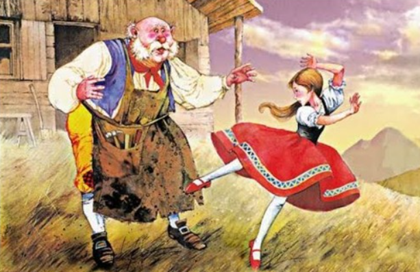
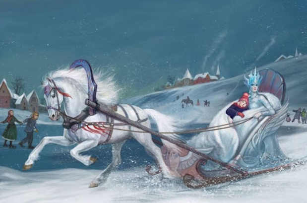

1. Truyện Nàng Tiên Cá

Ngày xửa ngày xưa, tận dưới đáy đại dương mênh mông xanh thẳm, nơi đó có một lâu đài nguy nga tráng lệ, nơi mà vua Thủy Tề và các cô con gái sinh đẹp của ông sinh sống. Vua Thủy tề với trí óc thông thái, bộ râu ông dài và trắng một màu như cước. Ông sống trong lâu đài uy nga đó và một mình trị vì biển khơi.
Vua Thủy Tề có một cô con gái út rất xinh đẹp tên là Ariel, nàng cực kì xinh đẹp, giọng hát của nàng trong trẻo mát xanh tựa như những dòng nước sâu dưới biển khơi.
Vua Thủy Tề nói với con gái mình: “Ariel yêu dấu, con có một chất giọng thật tuyệt vời, mỗi khi con cất lên tiếng hát, tất cả những loài vật dưới biển khơi này đều tụ tập từng đàn rất đông nghe con hát. Cả những con trai bình thường chúng chỉ ẩn nấp dưới lớp vỏ cứng cũng mở miệng ra tán thưởng, để lộ ra những viên ngọc quý, và đàn sứa cũng dừng trôi để nghe tiếng hát trong trẻo của con”.
Nàng tiên cá vẫn hay ngồi ngắm những làn ánh sáng chiếu xuống từ mặt trời rọi xuyên quan những làn nước sâu mờ mờ ảo ảo.
Nàng tiên cá Ariel nói với những người chị của mình rằng: “Em ước một ngày nào đó cỏ thể lên trên kia ngắm nhìn bầu trời, em thấy lũ cá nói với nhau rằng trên đó rất đẹp, trên đó có con người và cả những bông hoa rất đẹp với đầy đủ màu sắc”.
Những người chị nói với cô em út: “Rồi điều ước của em sẽ thành hiện thực mà, em cứ chờ cho tới khi em tròn 15, lúc đó cha sẽ cho phép em được bơi lên mặt nước giống như là các chị vậy”. Vâng em sẽ cố gắng chờ dến ngày đó – Ariel đáp.
Hàng ngày, các nàng tiên cá chỉ được bơi lên trên mặt nước vào đêm. Khi những người chị trở về, Ariel hỏi các chị gái: “Trên đó các chị thấy những gì vậy, kể cho em nghe”.
Nàng nghe các chị mình kể những gì họ dã nhìn thấy để thỏa mãn chí tò mò của một cô gái đang trong tuổi lớn. Trong lúc các chị lên trên mặt nước chơi đùa thì Ariel phải ở lại chơi với các bạn cá ngựa và cá heo.
Năm tháng trôi đi, cuối cùng thì ngày sinh thứ 15 của nàng Ariel cũng đã tới. Trước ngày hôm đó, Ariel rất hồi hộp: “Em không ngủ được các chị ạ, đến sáng ngày mai là em đã bước sang tuổi 15 rồi, thế là em có thể lên mặt nước vui đùa cùng các chị rồi”.
Buổi sáng hôm ấy, Vua Thủy Tề gọi cô con gái út và nói: “Cha chúc mừng sinh nhật con cái út của cha, đến giờ con đã tròn 15 và con có thể cùng các chị gái của mình lên mặt nước để hít thở và ngắm nhìn bầu trời rồi. Nhưng con hãy nhớ điều cha dặn, thế giới chúng ta là ở dưới biển, trên đó không phải là thế giới của chúng ta, con có thể lên trên đó để ngắm nhìn mặt biển và bầu trời. Chúng ta không thuộc về thế giới của loài người nên con hãy nhớ hãy tránh xa họ ra, họ chỉ đem lại những xui xẻo cho chúng ta mà thôi”.
Ariel nói: “Con sẽ nhớ lời cha dặn dò, con cảm ơn cha”.
Ngay lập tức, với sự háo hức của mình, nàng bơi ngay lên mặt nước. Trên đường nàng đi, các bạn cá heo cá ngựa vẫn hay vui đùa cùng nàng chúc nàng đi chuyến đi đầu tiên lên mặt nước vui vẻ.
Ariel nôn nóng đáp: “Mình đi đây, chúng mình gặp lại nhau sau nhé”.
Khi nàng lên tới mặt nước, bầu trời đã bắt đầu tối sẩm, trên trời những ngôi sao dần dần hiện rõ và lấp lánh. Ariel vui sướng kêu lên: “Đẹp quá, lần đầu tiên mình được trông những ngôi sao lấp lánh trên bầu trời rộng lớn”
Phía trước là cái gì vậy? Một con thuyền. Thêm một điều nữa làm cho nàng tiên cá Ariel cảm thấy ngạc nhiên và thú vị
Con tàu đang tiến chầm chậm tới tảng đá mà Ariel đang ngồi. Đoàn thủy thủ thả neo để cho con thuyền đỗ tại một nơi sóng yên biển lặng.
Ariel cảm thấy rất thích thú khi nhìn những thủy thủ trên con tàu làm việc, họ thắp lên những ngọn đuốc, nàng còn nghe rất rõ họ nói chuyện với nhau: “Đến lúc chúng ta nghỉ ngơi ăn bữa tối rồi, nào các bạn ơi hãy mau lên bờ thôi”.
Ariel nghĩ “Mình muốn tới nói chuyện với họ quá, nhưng mình không có đôi chân như họ, mình có cái đuôi dài và không bao giờ giống họ được”.
Nàng tiên cá còn nghe thấy thêm nhiều giọng nói vang lên, một lát sau những chùm ánh sáng với đủ màu sắc rực rỡ xuất hiện trên bầu trời của những luồng pháo hoa nổ giữa bầu trời đêm.
Xin chúc mừng sinh nhật hoàng tử, vị thuyền trưởng của chúng ta. Hôm nay là sinh nhật thứ 20 của người, chúc hoàng tử luôn vui vẻ và hạnh phúc.
Xin cám ơn các bạn của ta – Hoàng tử đáp.
Ariel tự hỏi “Sinh nhật của ai vậy nhỉ ?”
Nàng thấy ở trên boong tàu, xuất hiện một chàng trai vẻ ngoài cực kì khôi ngô và tuấn tú, mọi người đang vui vẻ chúc mừng sinh nhật chàng trai. Ariel ngắm nhìn chàng trai say đắm, nàng thốt lên: “ôi hoàng tử mới đẹp làm sao!”
Bữa tiệc sinh nhật vẫn diễn ra, đột nhiên hoàng tử sẩy chân ngã khỏi boong tàu, chàng ngã rơi xuống dưới biển. Ariel vội vàng bơi nhanh ra cứu chàng, nàng vừa bơi vừa đẩy hoàng tử lên phía bờ biển.
Hoàng tử nằm trên bãi cát, đôi mắt hoàng tử vẫn nhắm nghiền. Ariel luống cuống: “Giờ ta phải làm thế nào đây?”
Nàng ngồi bên cạnh chàng hoàng tử suốt cả đêm. Khi mặt trời bắt đầu ló lên khỏi mặt đất cũng là lúc nàng tiên cá phải trở về với biển khơi.
Hoàng tử dần dần tỉnh dậy khi ánh nắng đầu tiên của mặt trời rọi xuống. Chàng tự hỏi: “Cô gái xinh đẹp hôm qua đã cứu mình đâu? Nàng thật xinh đẹp, giọng nói nàng thật tuyệt vời. Giờ mình phải trở về cung điện đã, chắc mọi người đang rất lo lắng cho mình”.
Hoàng tử rời bãi biển để quay về cung điện, ngày hôm sau, hoàng tử lên con tàu và gửi lời cảm ơn tới người con gái đã cứu sống chàng mà chàng chưa hề biết tên. Chàng nói to: “Xin càm ơn nàng, cảm ơn nàng đã cứu ta, người con gái vô cùng xinh đẹp”
Khi trở về tới thủy cung, các chị gái nàng hỏi sao nàng lại ở trên bờ lâu đến thế. Nàng tiên cá Ariel định kể lại câu chuyện của mình cho các chị nghe nhưng nàng ngập ngừng rồi không nói. Nàng bật khóc và trở về phòng.
Một người chị của nàng vào phòng hỏi: “Ariel, em đã trở về được 3 ngày rồi, em đã gặp chuyện gì trên đó mà từ lúc về em không chịu ăn uống gì cả?”
Ariel nói với chị: “Chị à, em muốn được kết hôn với hoàng tử”.
Người chị ngạc nhiên nói: “Sao lại thế được em, chúng ta và con người hoàn toàn khác nhau, chúng ta là tiên cá, không thể kết hôn cùng với con người được. Em hãy từ bỏ ý nghĩ ngốc nghếch đó đi. Có thể mụ phù thủy sẽ có cách giúp em”
Nàng liền bơi tới chỗ mụ phù thủy….
…Ta đang gặp ai đây, ôi công chúa Ariel, điều gì mang công chúa tới gặp ta vậy?
Ariel nói: “Tôi muốn được trở thành con người”
Mụ phù thủy hỏi: “Vậy là công chúa muốn bỏ đi cái đuôi và muốn có hai chân như con người phải không?”
Ariel trả lời ngắn gọn: “Đúng vậy”
Điều này không hề dễ dàng đâu, công chúa sẽ cực kì đau đớn vì khi đó ta phải dùng một thanh kiếm sắc cắt đi chiếc đuôi của người. Và mỗi khi công chúa đặt chân len mặt đất thì công chúa sẽ chịu rất nhiều đau đớn.
Ariel nói: “Không sao hết, miễn là tôi có thể được đặt chân lên mặt đất để gặp lại hoàng tử thêm một lần nữa”
Mụ phù thủy ra điều kiện: “Thế công chúa sẽ trả công cho ta ra sao? Nếu như ta giúp công chúa, công chúa sẽ phải trao cho ta giọng hát hay nhất biển khơi này của người, và như thế thì người sẽ không bao giờ nói được nữa. Và công chúa hãy nhớ một điều rằng, nếu như vị hoàng tử mà công chúa yêu lại đem lòng kết hôn cùng với một người con gái khác thì công chúa sẽ vĩnh viễn không bao giờ quay lại làm tiên cá được nữa. Công chúa sẽ bị tan biến như bọt biển”
Ariel đáp: “Được, ta đồng ý”
Mụ phù thủy lấy ra một chiếc vỏ sò và thu lại giọng hát trong trẻo của nàng, mụ đưa nàng một liều thuốc thần.
Nàng tiên cá Ariel mang liều thuốc thần đó bơi lên trên mặt nước. Khi lên tới bờ, nàng đã uống thuốc thần và ngã ra ngất xỉu.
Khi tỉnh dậy, nàng thấy khuân mặt thân yêu của của chàng hoàng tử đang mỉm cười với nàng.
Xin chào cô gái, nàng đừng sợ. Ta thấy nàng nằm bất tỉnh nơi đây, giờ nàng thấy trong người sao rồi?
Ariel định cất tiếng trả lời hoàng tử nhưng giờ nàng đã bị mất đi giọng nói.
Nàng đừng sợ, đã có ta ở đây rồi. Nhà nàng ở đâu? Nàng từ đâu tới?
Ariel vì mất giọng nói nên vẫn im lặng
Hoàng tử nói: “Ta xin lỗi nàng, thôi giờ nàng hãy theo ta về lau đài để ta có thể tiện chăm sóc”
Những ngày sau, cuộc sống của nàng tiên cá Ariel đã như bước sang trang mới. Tuy nhiên, mụ phù thủy đã cảnh báo nàng rằng mỗi bước chân của nàng sẽ rất đau đớn như kim đâm, nàng tiên cá vẫn cố gắng chịu đựng và không hề kêu than.
Hoàng tử rủ nàng đi dạo trên bờ biển. Ariel và hoàng tử dạo bước thì bỗng nhiên hoàng tử đứng lại và kiếm tìm xung quanh.
Hoàng tử nói: “Nàng có nghe thấy giọng hát đó không, giọng hát này là của một cô gái du dương bên tai ta khi ta được cô gái đó cứu sống từ biển khơi”
Ariel rất ngạc nhiên
Hoàng tử quay lại và thấy một cô gái cực kì xinh đẹp đang đứng ngay trước mặt mình. Đó chính là cô gái mà do mụ phù thủy biến thành. Sau khi lấy được giọng hát ngọt ngào của Ariel, mụ đã lấy tên là Vanessa. Tiếng hát ngọt ngào đó mụ giấu trong một chiếc vò sò và đeo trên cổ.
Hoàng tử nói: “Thật là một giọng hát tuyệt vời, ta yêu giọng hát ấy”
Mụ phù thủy nói: “Em xin cảm ơn hoàng tử, hoàng tử cũng rất là điển trai”
Hoàng tử nói tiếp: “Nàng hãy theo ta về cung điện”
Mụ phù thủy đáp: Vâng, vậy em xin nghe theo lời chàng
Thế là cả 3 người cùng trở về lâu đài. Ngày qua ngày, mụ phù thủy dùng vẻ đẹp bên ngoài do dùng phép và giọng hát lấy được từ Ariel quyến rũ hoàng tử. Cuối cùng, hoàng tử cũng quyết định kết hôn cùng Vanessa.
Hoàng tử hỏi nàng tiên cá Ariel: “Ta muốn kết hôn cùng với Vanessa, nàng thấy thế nào?”
Khi nghe thấy hoàng tử nói vậy, trái tim của Ariel đã hoàn toàn tan vỡ, nước mắt nàng cứ trào ra nhưng nàng vẫn gật đầu với hoàng tử.
Thôi, anh phải đi để chuẩn bị cho lễ cưới thôi, hôn lễ sẽ được tổ chức vào tối mai, ngay tên tại boong tàu.
Ariel buồn lắm, nhưng nàng cũng không biết phải làm gì cả.
Sang ngày hôm sau, tất cả mọi người lên trên tàu và khởi hành ra ngoài biển khơi. Vanessa đã ăn mặc rất lộng lẫy.
Hoàng tử hỏi: “Vanessa, nàng đã xong chưa? Ra đây cho ta ngắm nàng một chút nào”
Vâng, em ra ngay đây, chàng đợi em một chút
Bỗng nhiên hoàng tử thấy Vanessa gào lên: Không! Không thể nào!
Hoàng tử hỏi: “Có chuyện gì mà nàng hốt hoảng vậy Vanessa?”
Thì ra, chiếc vỏ sò mà Vanessa đeo trên cổ đã rơi xuống đất và vỡ tan tành, nhờ thế mà giọng hát của nàng tiên cá Ariel được giải thoát trở về với cô.
Ariel nói: “Hoàng tử, Vanessa là phù thủy đấy”
Hoàng tử ngạc nhiên nói: “Ta không hiểu chuyện gì nữa, chuyện gì đang diễn ra? Sao nàng lại có giọng nói cả Vanessa?”
Ariel kể lại toàn bộ chuyện của nàng với hoàng tử. Hoàng tử nghe xong mới ngỡ ra: “Vậy nàng chính là người đã cứu ta sao? Vậy là ta đã suýt chút nữa cưới nhầm Vanessa. Nàng đã cứu ta thêm một làn nữa, Ariel nàng mới là người con gái mà ta đang tìm kiếm, hãy lấy ta nhé Ariel ?”
Vâng, em đồng ý…
Ngay khi Ariel nói dứt lời thì mụ phù thủy kéo Ariel lôi nàng xuống dưới biển. Ngay khi chạm mặt nước, Ariel đã trở lại hình dạng tiên cá như trước.
Vua Thủy Tề linh càm thấy có chuyện chẳng lành sảy ra nên liền lập tức đi cứu Ariel. Thấy cha mình xuất hiện, Ariel kêu cứu: “Cha ơi cứu con”
Vua thủy tề ra lệnh: “Ngươi hãy thả con gái ta ra ngay”
Mụ phù thủy nói: “Ngươi không cứu được con gái ngươi đâu, giờ nó là nô lệ của ta”
Vua Thủy Tề chĩa mũi đinh ba vào mụ phù thủy phóng ra một tia sét, sức mạnh của nó làm mụ phù thủ phải rời tay khỏi Ariel. Mụ bị thương và chìm xuống dưới đáy biển. Ariel được giải thoát.
Con đừng lo, mụ ta sẽ không bao giờ sống lại để hại con nữa
Cha ơi, nhưng con muốn….
Cha biết, con muốn được kết hôn với hoàng tử
Vâng cha
Được, giờ ta sẽ biến con trở thành con người mãi mãi, và từ nay con sẽ không thể làm một nàng tiên cá được nữa, con có chịu không?
Con đồng ý thưa cha
Vua Thủy Tề biến Ariel thành con người, trên thuyền hoàng tử đã tận mắt trông thấy những điều sảy ra, chàng dùng dây kéo nàng lên boong thuyền.
Ariel nói: Kia là cha em, còn kia là các chị gái của em
Hoàng tử giơ tay vẫy chào họ.
Vua Thủy Tề ban phúc: Chúc hai con trăm năm hạnh phúc ! Hãy nhớ yêu thương nhau đến trọn đời!
Hoàng tử và Ariel tổ chức một đám cưới linh đình và mọi người chúc họ hạnh phúc mãi mãi.
2. Truyện đôi giày đỏ
Bởi vì mẹ cô bé rất nghèo nên cô cũng chẳng có những thứ giầy dép nào cả, khi mùa hè tới thì cô chỉ toàn đi chân đất mà thôi, còn mùa đông thì cô lại đi một đôi guốc gỗ cũ, bởi vì chân cô không chịu nổi cái thời tiết rét lạnh ấy mà cứ đỏ ửng hết cả lên.
Ở trong làng bấy giờ có bà già làm nghề thợ giày. Bởi vì rất thương yêu cô bé nên bà đem gom góp những mảnh da màu đỏ rồi đem chắp vá lại thành một đôi giày để tặng cho cô bé.
Mặc dù đôi giày mà bà làm chẳng đẹp đẽ cho lắm bởi vì đôi mắt của bà già phúc hậu này đã kém lắm rồi, đôi tay thì lại thường run rẩy, nhưng mà bà lão đã làm và tặng đôi giày ấy cho cô bé Karen với tấm lòng vô cùng trìu mến. Vì thế mà Karen thích đôi giày này lắm.
Nhưng cũng vào đúng ngày hôm ấy thì mẹ của cô bé đột nhiên qua đời. Theo lẽ thường thì nhà có tang sẽ không thể nào được đeo giày màu đỏ. Tuy nhiên Karen lại không có lấy một đôi giày nào khác cả, vì vậy đành phải chấp nhận đeo đôi giày đỏ kia. Karen vừa đi lại vừa khóc nức nở.
Bỗng nhiên có một cỗ xe ngựa rất lớn nhưng có phần cũ kĩ đi ngang qua. Ở trên xe có một bà già trông rất quý phái. Khi nhìn thấy cô gái nhỏ mồ côi đang thút thít đầy đáng thương, bà liền động lòng, bà nói với ông cụ đạo để xin lấy cô bé ấy. Bà già quý phái ấy nói rằng:
– Cụ hãy cho tôi đem cô bé này theo, tôi hứa sẽ đem về và nuôi nấng, chăm sóc thật chu đáo.
Ban đầu thì Karen nghĩ rằng người này nhìn tới mình vì mình đeo một đôi giày đẹp. Tuy nhiên về sau thì bà lại chê đôi giày của em xấu, nên vứt đi. Sau đó thì bà cho Karen ăn mặc toàn những thứ quần áo sạch sẽ và đẹp đẽ, còn cho Karen đi học đọc, học viết, còn học cả may vá nữa. Tất cả mọi người xung quanh đều khen ngợi Karen vừa xinh đẹp vừa ngoan ngoãn. Khi nhìn vào gương thì gương cũng nói rằng Karen rất đẹp và rất ngoan.
Vào một ngày nọ khi nhà vua đem theo hoàng hậu cùng công chúa của mình ngự giá tới thành phố ở gần đấy thì nhân dân đều nô nức mà kéo nhau tới để chiêm ngưỡng được long nhan. Và Karen cũng đi theo những người lớn để đến xem.
Cô bé nhìn thấy nàng công chúa mặc váy xatanh độc một màu trắng tinh và đứng ở trên bao lơn cho mọi dân chúng đều được nhìn thấy. Ở dưới chân mình, nàng công chúa đeo một đôi giày màu đỏ bằng da dê vô cùng xinh đẹp, nó khác hẳn với đôi giày đỏ mà bà già thợ giày nghèo nhưng phúc hậu đã từng tặng cho Karen ngày trước.
Khi sắp tới ngày Karen chịu lễ thêm sức thì bà già quý phái liền may cho Karen bộ quần áo rất đẹp, sau đó đưa cô bé tới chỗ người thợ giày giỏi nhất ở trong thành phố để thuê người ta đóng cho Karen một đôi giày đẹp. Khi đến chỗ người thợ giày, Karen liền chìa đôi chân nhỏ bé của mình để bác thợ giầy kia đo cỡ.
Trong lúc đó cô cũng bận rộn nhìn khắp chung quanh cửa hàng, cô bé trông thấy ở bên trong tủ kính có đôi giày đỏ rất đẹp, nhìn cũng đẹp y như là đôi giày mà nàng công chúa đeo ngày hôm trước vậy. Và cô bé reo lên đầy vui mừng:
– Ôi chao! Đôi giày kia đẹp biết bao! Cháu thích nó lắm! Bác để cháu thử đi, nếu như vừa thì hãy bán nó cho cháu.
Người thợ giày lấy đôi giày kia đưa cho Karen thử và bảo:
– Đây chính là đôi giày mà con gái bá tước đã đặt trước, nhưng bởi vì nó quá nhỏ nên đi bị chật nên tôi mới để lại đây.
– Đôi giày này làm bằng da dê đúng không? – Bà già quý phái hỏi – nhìn nó bóng bẩy đẹp quá!
– Vâng thưa bà, nó được làm từ da dê đấy!
Bởi vì Karen đeo đôi giày ấy rất vừa rất đẹp nên bà già quý phái lập tức mua cho cô. Có điều là bà không hề biết đôi giày đó màu đỏ, bởi vì mắt bà đã kém quá rồi. Nếu như biết nó màu đỏ thì chắc chắn bà sẽ không để cho cô bé đeo nó trong ngày đi chịu lễ thêm sức ở nhà thờ.
Khi trông thấy Karen đeo một đôi giày đỏ, tất cả mọi người bên trong nhà thờ đều lắc đầu. Khi Karen đi qua ngưỡng cửa thì tất cả những bức tranh được treo ở trên tường đều nhìn chằm chằm cô bé. Nhưng Karen không hề cảm thấy ngượng ngùng, cô bé lại càng cảm thấy hãnh diện hơn.
Cụ đạo thì nhắc nhở cho Karen biết bổn phận của một cô gái khi đã đến tuổi biết suy nghĩ, bước chân vào trong hàng ngũ của con chiên. Và rồi đại phong cầm lại vang lên những giai điệu của bài thánh ca. Còn dàn hợp xướng nhi đồng thì hát vang bài hát cầu nguyện. Nhưng Karen lại chỉ mải mê ngắm nhìn đôi giày đỏ xinh đẹp như đôi giày của nàng công chúa.
Buổi chiều ngày ấy, khi nghe được mọi người bàn tán thì bà già quý phái mới hay mọi chuyện. Bà già bảo với cô bé rằng:
– Khi đến nhà thờ để dự lễ, nếu đi giày đỏ thì sẽ bị cho là ngạo nghễ. Vì vậy từ nay mỗi khi bước chân vào nhà thờ thì phải đeo giày đen, dù cho nó có cũ hay rách thì cũng phải đeo.
Vào ngày chủ nhật sau thì Karen tiếp tục phải tới nhà thờ để chịu lễ ban thánh thế. Cô bé nhớ tới lời dặn của bà già quý phái, vì vậy liền đeo một đôi giày đen. Nhưng là cô bé cứ nhìn qua rồi lại nhìn lại phía đôi giày đỏ, kiểu gì cũng thấy nó đẹp hơn, vậy là cô bé lại bỏ đôi giày đen dưới chân ra và đeo giày đỏ vào.
Ngày hôm ấy thời tiết rất đẹp. Vì muốn được tận hưởng những tia nắng mặt trời ấm áp nên bà già quý phái dắt Karen đi dạo qua những con đường nhỏ, sau đó mới trở ra phía đường cái đến nhà thờ. Và họ đã qua con đường khá nhiều bụi bặm. Có một ông già thương binh đang chống gậy, khi thấy cả hai người đang đi tới thì ông già xin bà già quý phái cho phép mình được đánh giày. Và bà già đã đồng ý, cô bé Karen liền chìa đôi giày đỏ nhỏ xinh của mình cho ông già kia chải bụi.
Ông ta chải bụi xong bèn suýt xoa:
– Chao ôi đôi giày khiêu vũ này đẹp quá! Lúc khiêu vũ thì cô nhớ để giày bám thật chặt vào chân mình kẻo rơi đấy.
Rồi bà già quý phái liền cho ông già tàn tật ấy một đồng bạc, sau đó dẫn theo Karen vào nhà thờ. Tất cả các cử tọa ở đấy đều trợn tròn mắt nhìn đôi giày đỏ của Karen. Tất cả những bức tranh treo ở trên tường đều dán mắt nhìn đôi giày đỏ. Và Karen thì lại nhìn ngắm đôi giày xinh đẹp của mình đến mức quên luôn cả việc cầu nguyện lúc chịu lễ ban thánh thể, Karen lơ đãng vì cứ mải nghĩ tới đôi giày đỏ ở dưới chân mình. Và cô bé luôn tưởng rằng những người chung quanh đều ghen tỵ với đôi giày đỏ của mình.
Khi từ nhà thờ ra ngoài, bà già quý phái bước lên cỗ xe ngựa đã chờ sẵn ở ngoài cửa. Và Karen cũng theo sau bà bước lên.
Ông già tàn tật đánh giày khi nãy vẫn còn ở chỗ cũ. Khi nhìn thấy Karen thì ông già lại tấm tắc khen:
– Đôi giày khiêu vũ đó đẹp thật!
Đột nhiên Karen cảm thấy người mình bị nhấc bổng lên, còn đôi chân cô thì cứ nhún nhảy không ngừng, dù cô có muốn ghìm lại bao nhiêu thì cũng không được như ý muốn.
Người đánh xe trông thấy thì vội vàng ôm lấy Karen rồi ấn cô vào trong xe. Nhưng dù cho có vào trong xe thì Karen vẫn cứ tiếp tục nhảy múa, cô đá cả vào người bà già quý phái. May sao cuối cùng chiếc xe ấy cũng trở về tới nhà. Chị hầu gái vội vàng bế Karen vào trong phòng, lập tức tháo bỏ cái đôi giày quái gở trên chân cô ra, nếu không thì cô cứ vẫn nhảy múa mãi. Đến lúc ấy thì đôi chân của cô mới dừng lại nghỉ ngơi.
Đôi giày đỏ được cất vào trong tủ và khóa lại thật chặt. Nhưng mỗi ngày thì Karen đều đến ngắm nhìn nó hàng chục lần không biết chán.
Ít lâu sau thì bà già quý phái bị ốm, và bà cần có một người ở bên để trông nom và chăm sóc. Đó chính là nhiệm vụ mà Karen được giao. Nhưng cũng đúng hôm ấy thì cô nhận được thiệp mời dự dạ hội. Karen vốn đã nghĩ mình phải ở nhà để mà chăm sóc cho bà già quý phái, vì bà chính là ân nhân cưu mang cuộc sống của cô.
Nhưng rồi Karen lại nghĩ rằng bà chắc chẳng sống bao lâu nữa, dù cho có chăm sóc thì cũng chẳng có ích lợi gì cả. Vậy là Karen lập tức đi mở tủ lấy đôi giày đỏ của mình, nó vẫn được giữ ở nơi đó từ rất lâu rồi. Khi đeo giày vào chân, Karen liền nghĩ đi dạ hội mà đeo giày này chắc hẳn không có chuyện gì.
Và Karen ra đi. Tuy nhiên, cô chỉ vừa bước chân khỏi cửa thì đôi chân lại bắt đầu nhảy nhót không ngừng, chúng đập vào nhau, rồi lại nhảy sang bên trái, rồi lại nhảy sang bên phải. Bởi vì thấy cô bé xinh đẹp quá, nhảy lại khéo nên mọi người đi đường đều đứng hết lại để xem.
Suốt cả quãng đường từ nhà cho tới nơi tổ chức dạ hội thì Karen vẫn cứ nhảy nhót không ngừng, khiến cho cô mệt đến mức không cách nào mà lê vào trong hội trường nữa. Thế là cô cứ phó mặc mình cho đôi giày, để nó đưa cô đi qua khắp các phố phường, sau đó lại đi thẳng ra ngoại thành và tới những khu rừng ở rất xa.
Khi đến đây thì cô nhìn thấy ông già tàn tật đánh giày ngày trước. Ông già nói:
– Xin chào cô bé xinh đẹp. Cô bé có một đôi giày khiêu vũ thật kháu quá đi!
Cho đến tận lúc này thì Karen mới biết ông già tàn tật này chính là một gã phù thủy. Lão tiếp cận cô không phải để đánh giày kiếm tiền, lão ta muốn chính là phù phép vào đôi giày của cô. Lúc này thì Karen đã phát hoảng lên được, cô muốn tháo bỏ đôi giày nhưng lại không làm cách nào lôi nó ra khỏi chân. Đôi giày đỏ cứ thế
3. Truyện cô bé bán diêm
Đêm ấy, có một bé gái nhỏ đầu trần, chân đất đi trong bóng tối. Hai chiếc giày của cô khá rộng liên tục bị văng mất. Một chiếc bị xe ngựa nghiền và dính theo dòng tuyết cùng bánh xe trôi đi. Một chiếc được một thằng bé lượm được nhưng nó lại mang về làm nôi cho chó. Vì vậy, em không có giày để đi.
Thời tiết lạnh buốt làm đôi chân em đỏ ửng, bầm tím. Chiếc tạp dề đựng đầy những que diêm và vỏ bao ngoài. Em cố tìm chỗ đông người nhưng ai cũng rảo bước rất nhanh và không ai bận tâm đến cho em.
Em bé lang thang trên người dính đầy tuyết , bụng đói rất đáng thương. Cả đêm giao thừa trên phố đèn sáng rực cùng với mùi ngỗng quay khiến em càng đói hơn. Em nhớ lại khi bà nội còn sống em cũng được đón giao thừa hạnh phúc. Khi bà mất gia đình ly tán, những ngày tháng ấm áp mất đi thay vào đó là lời mắng nhiếc và chửi rủa mỗi ngày.
Em ngồi trong một góc tường co ro. Trời mỗi lúc càng buốt khiến em rất lạnh. Không ai quan tâm cũng như bố thí cho em. Về nhà chắc cũng lạnh như vậy, gió thốc ngoài cửa vào nhưng em phải bán hết chỗ diêm ấy không về cha em sẽ mắng.
Được một lúc tay cô bé bán diêm lạnh buốt và cứng đơ. Em quẹt một que diêm hơ những ngón tay. Ngọn lửa sáng hồng rực rỡ khiến em tưởng như mình đang ngồi trước đống lửa hồng rực vậy. Em hơ tay trên ngọn lửa và ao ước có được chiếc lò sưởi thì quá tốt. Nghĩ đến trọng trách bán diêm nhưng không thu được gì em vẫn sợ bị bố mắng.
Em tiếp tục quẹt que thứ hai: Que diêm sáng rực. Em gái nhìn thấy bức tường như một tấm rèm. Bên trong là bàn ăn thịnh soạn, có cả ngỗng quay. Điều kỳ diệu là ngỗng cùng cả dao, nĩa tiến về phía em gái. Rồi que diêm vụt tắt. Mọi ảo giác đều biến mất trả lại khung cảnh lạnh lẽo với 4 bức tường, gió bấc, đường phố vắng teo.
Mọi người đi trên đường hoàn toàn không tỏ ra quan tâm tới người nghèo khổ như cô.
Em tiếp tục quẹt que diêm thứ 3. Em thấy cả một cây thông noel to đùng được trang trí lộng lẫy đầy nến, cây xanh tươi tạo thành bức tranh màu rực rỡ. Em định với tay về cây nhưng diêm tắt. Em thấy tất cả ngọn nến bay lên như sao trời. Khi thấy sao đổi ngôi đồng nghĩa với việc có một linh hồn đang bay lên trời với thượng đế.
Em tiếp tục quẹt một que diêm nữa và thấy người bà hiền dịu xuất hiện. Cô bé nói:
– Bà ơi, bà đừng bỏ cháu một mình ở nơi này. Lúc trước bà bảo cháu ngoan sẽ được gặp lại bà. Cháu xin bà nói với Thượng Đế cho cháu theo bà với. Que diêm vụt tắt khiến mọi hình ảnh tan biến. Chỉ còn lại không nhiều em lấy ra quẹt để níu kéo bà của mình. Bà cụ cầm lấy tay em và bay cao mãi, chẳng còn sợ hãi và đói rét. Họ cùng bay lên trời.
Sáng hôm sau, bầu trời xanh, tuyết vẫn phủ kín mắt đất ai cũng vui vẻ ra khỏi nhà. Họ thấy một cô bé bán diêm má đỏ môi mỉm cười chết trong giá lạnh đêm giao thừa. Có rất nhiều bao diêm, trong đó một bao mà em đã đốt hết nhẵn sưởi ấm cho mình. Không ai có thể thấy cảnh lung linh của hai bà cháu và hai bà cháu bay lên trời đón niềm vui.
4. Truyện Nàng công chúa và hạt đậu
Ngày xưa, có một hoàng tử muốn cưới một nàng công chúa, nhưng công chúa phải cho ra công chúa, phải hoàn thiện toàn mỹ. Hoàng tử bèn chu du khắp thiên hạ để kén vợ. Công chúa thì chẳng thiếu gì, nhưng nàng nào cũng có vài nhược điểm hoặc tật xấu. Thế là một ngày kia, hoàng tử đành buồn rầu trở về nhà.
Đến tối, nổi lên một cơn giông tố kinh khủng. Mưa ào ào như xối. Có tiếng gõ cửa lâu đài.Lão vương thân chinh ra mở cửa.
Bên ngoài là một nàng công chúa, nhưng mưa gió đã làm cho nàng tiều tụy quá thể. Đầu tóc, quần áo nàng võng những nước và còn nhỏ giọt từ mũi xuống giầy nàng. Nàng tự giới thiệu nàng là công chúa toàn thiện toàn mỹ mà hoàng tử đang chờ đợi. Hoàng hậu nghĩ thầm: “Được, cứ để xem xem !” . Rồi hoàng hậu vào buồng ngủ thắp đèn lên và nhét một hạt đậu xuống dưới đệm giường. Sau đó ngài đặt hai mươi cái đệm chồng lên trên cái đệm đã đặt trước. Đấy chính là cái giường dành cho công chúa.
Sáng ra người ta hỏi thăm đêm qua nàng ngủ có yên giấc không. Nàng đáp :
– Suốt đêm tôi không chợp mắt, vì nằm phải vật gì răn rắn, thâm tím cả mình mẩy.
Hoàng hậu bèn phán :
– Công chúa ra công chúa thật ! Đây chính là nàng công chúa toàn thiện toàn mỹ, nằm trên hai mươi lần đệm nàng vẫn thấy đau vì một hạt đậu.
Hoàng tử cưới nàng làm vợ và hạt đậu được bày trong một phòng triển lãm, đến giờ vẫn vào xem được, vì chưa có ai lấy đi cả.
Chuyện tôi kể đến đây là hết và tôi xin cam đoan với các bạn là chuyện có thật đấy.
5. Truyện Bà chúa Tuyết
Một người đàn bà góa chồng có hai cô con gái, trong hai cô có một cô đã xinh đẹp lại siêng năng, còn một cô vừa xấu xí lại lười biếng. Bà mẹ cưng cô xấu xí và lười biếng hơn vì cô là con của bà đẻ ra. Mọi việc trong nhà cô kia phải đảm nhận nên người cô bụi bặm như cô Lọ Lem trong gia đình. Ngày ngày, cô bé đáng thương ấy phải ra ngồi ở con đường lớn bên giếng mà kéo sợi, cô phải kéo nhiều đến nỗi máu chảy rỉ ra. Có lần máu thấm đầu ống sợi, cô cúi xuống định rửa sạch sợi nhưng tuột tay ống sợi rơi xuống giếng. Cô khóc lóc chạy về kể lể chuyện không may ấy cho dì ghẻ nghe. Dì ghẻ mắng cô thậm tệ, rồi nhẫn tâm bảo cô:
- Mày đánh rơi ống sợi xuống đó thì mày phải xuống đó mà mò nó lên!
Cô bé lại phải lộn ra giếng, nhưng cũng chẳng biết làm thế nào. Trong lúc quá sợ hãi cô liều nhảy xuống giếng để mò ống sợi. Cô bị ngất đi, khi cô mở mắt và hồi tỉnh thì thấy mình đang nằm ở trên một cánh đồng cỏ đẹp đẽ, ngàn hoa đua sắc dưới ánh nắng chói chang. Cô đi băng qua đồng cỏ thì tới một lò nướng bánh, lò đầy ắp bánh mì, bánh mì gọi cô:
- Cô ơi, hãy kéo chúng tôi ra! Hãy kéo chúng tôi ra với kẻo chúng tôi cháy mất, chúng tôi được nướng chín xong từ lâu rồi mà.
Cô gái lại gần lò bánh, lấy xẻng dỡ hết bánh ra. Sau đó cô lại tiếp tục đi, cô tới dưới một cây táo sai chi chít quả. Cây gọi cô:
- Trời ơi, rung tôi đi, rung tôi đi cô bé, táo chúng tôi chín tất cả rồi..
Cô rung cây cho táo rụng. Táo rụng như mưa, cô rung mãi cho đến khi trên cây không còn một quả táo nào. Cô nhặt táo xếp thành đống xong lại tiếp tục đi.
Sau cùng cô đến một căn nhà nhỏ, một bà cụ già răng to kệch ló đầu ra nhìn, cô gái đâm hoảng tính chạy trốn. Nhưng bà cụ gọi cô lại bảo:
- Có gì mà phải sợ, cô cháu yêu quý? Ở đây với bà, nếu cháu làm mọi việc trong nhà đâu vào đấy thì cháu muốn gì mà chẳng có. Cháu chỉ cần lưu ý dọn giường nằm của bà cho chu đáo và rũ giường cẩn thận siêng năng để sao có lông bay ra thì mới có tuyết rơi xuống hạ giới , bà chính là Bà Chúa Tuyết đây.
Bà cụ nói với cô bé với giọng hết sức thân mật gần gũi. Cô bé cảm thấy dễ chịu nên bằng lòng ở lại giúp việc cho bà cụ. Cô cố gắng làm mọi việc theo ý bà cụ dặn. Cô rũ giường bà thật mạnh để cho lông bay là tà khắp nơi như những bông hoa tuyết. Xứng với công khó nhọc của cô, bà dành cho cô một cuộc sống thoải mái, ăn uống sung sướng, không bao giờ nặng lời với cô, ngày nào cũng món xào, món nấu ngon lành. Ở nhà Bà Chúa Tuyết được một thời gian cô bé cảm thấy lòng buồn rười rượi. Mới đầu, cô cũng chẳng hiểu tại sao nhưng cô nhận thấy đó là do cô nhớ nhà. Mặc dù ở đây sung sướng hơn ở nhà muôn phần nhưng cô vẫn tha thiết được về nhà. Sau đó cô thưa chuyện với Bà Chúa Tuyết:
- Thưa bà, lâu nay cháu buồn vì nhớ nhà quá. Dù ở dưới hạ giới cháu không được sung sướng bằng ở đây, nhưng cháu cũng không thể ở đây lâu hơn nữa, cháu muốn xin trở về sống với bà con thân thuộc của cháu.
Bà Chúa Tuyết nói:
- Cháu tha thiết đòi về nhà thì bà cũng vui lòng để cháu về. Vì cháu đã hết lòng giúp việc cho bà, vậy để chính bà đưa cháu về nhé.
Bà cầm tay cô bé và dẫn cô tới trước một cái cổng to. Cổng mở, khi cô vừa đặt chân tới thềm cổng thì có một trận mưa vàng lớn. Tất cả vàng dính đầy vào người cô.
Bà Chúa Tuyết bảo:
- Cháu có được cái đó là cháu đã làm lụng chăm chỉ.
Rồi bà trao cho cô gái ống sợi mà cô tuột tay đánh rơi xuống giếng.
Sau đó cổng đóng lại. Cô gái trở lại trần, thấy mình đang đứng cách nhà dì ghẻ không bao xa. Khi cô bước vào sân thì con gà đậu trên thành giếng gáy:
Ki rơ ri ki
Gái vàng, gái bạc nhà ta đã về.
Rồi cô vào gặp dì ghẻ. Vì người cô phủ đầy vàng nên dì ghẻ và em gái tiếp đón thật là niềm nở.
Cô kể lại những chuyện mắt thấy tai nghe. Dì ghẻ thấy con chồng trở nên giàu có nên cũng muốn cô con gái xấu xí, lười biếng gặp may như vậy. Cô ta cũng ngồi bên bờ giếng guồng sợi, cô ta lấy kim đâm vào đầu ngón tay, khua cả bàn tay vào bụi gai để máu thắm đỏ ống sợi. Rồi cô ta đem vứt ống sợi xuống giếng và tự mình nhảy xuống giếng. Cũng như chị, cô ta đến một cánh đồng cỏ đẹp đẽ và cũng đi theo một con đường mòn như vậy.
Khi cô ả tới lò bánh mì, bánh mì cũng kêu:
- Cô ơi, hãy kéo chúng tôi ra, hãy kéo chúng tôi ra với kẻo chúng tôi cháy mất, chúng tôi được nướng chín xong từ lâu rồi mà.
Cô ả lười biếng đáp:
- Tao mà lại có hứng làm việc ấy ư, làm cho bẩn người ra à!
Nói rồi cô đi thẳng.
Một lúc sau cô ả tới chỗ cây táo. Táo gọi:
- Trời ơi, rung tôi đi, rung tôi đi cô bé, táo chúng tôi chín tất cả rồi.
Cô ả đáp:
- Mày nói chi mà dễ nghe vậy? Để táo rơi vào đầu tao à!
Rồi cô lại tiếp tục đi.
Khi tới trước cửa nhà Bà Chúa Tuyết cô chẳng sợ hãi gì cả vì cô đã được nghe kể về hàm răng to nom dễ sợ của bà. Cô nhận lời ở lại giúp việc cho bà.
Ngày đầu tiên cô ả ráng sức làm việc, tỏ ra chăm chỉ, Bà Chúa Tuyết bảo gì cô ả làm ngay cái đó vì cô ả còn nghĩ tới số vàng mà Bà Chúa Tuyết sẽ thưởng công cho cô. Nhưng sang ngày thứ hai cô đã bắt đầu giở cái thói lười, sang ngày thứ ba càng lười hơn, sáng ra cô không buồn dậy nữa. Cô không dọn giường cho Bà Chúa Tuyết, công việc mà lẽ ra cô phải làm hàng ngày, đã thế cô cũng chẳng chịu rũ đệm cho lông bay xuống.
Lâu dần Bà Chúa Tuyết cũng đâm ra chán và bảo cô ả lười biếng thôi không làm việc nữa. Cô ả thấy vậy mừng thầm, nghĩ bụng, giờ chắc sẽ có mưa vàng. Bà Chúa Tuyết dẫn cô tới cổng, khi cô vừa đặt chân tới thềm cổng thì một nồi nhựa thông đổ xuống chứ chẳng có mưa vàng nào cả. Bà Chúa Tuyết nói:
- Đây là thưởng cho cái công làm việc của con.
Rồi bà đóng cổng lại.
Khi cô ả về tới nhà, người dính đầy nhựa thông, con gà trống đứng trên thành giếng nom thấy cất tiếng gáy:
Ki kơ ri ki,
Gái dơ, gái bẩn nhà ta trở về.
Nhựa thông dính chặt lấy người cô suốt đời, không chịu rời ra nữa.